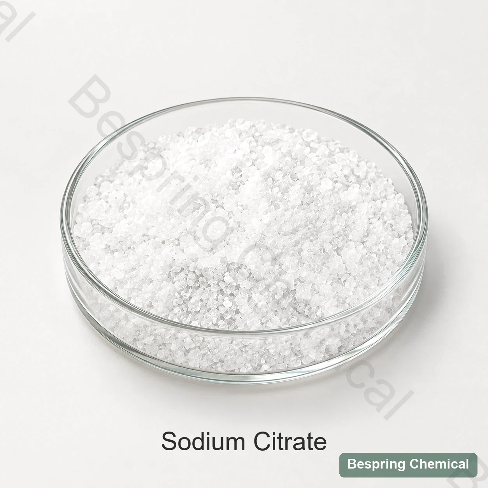
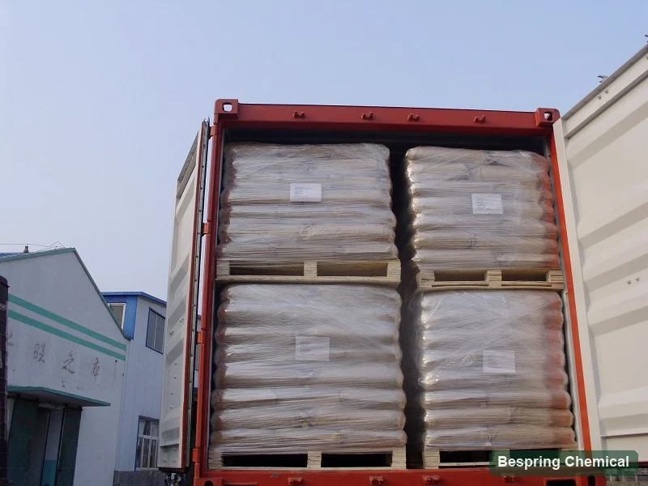

緩衝及び酸性制御
急速なpH変化に抵抗し、酸のプロフィールを適度に助けて下さい。最終的なpHおよびtitratableの酸性を検証して下さい;ナトリウムのクエン酸塩は単にクエン酸のように機能しません。
食品等級のクエン酸塩の塩・E331 (iii)/INS 331 (iii)
トリソジウムのクエン酸塩のdihydrateは緩衝、酸味の規則、沈殿物および乳剤サポートのための適した食糧システムで使用される水溶性のクエン酸塩の塩です。このページはより広いナトリウムのクエン酸塩の名前からの商業水和物のアイデンティティを分けます従ってバイヤーは正しい等級を修飾できます。

製品イメージ・注文時にグレード・パッケージの確認
状態 水和剤の形態、必要な標準、粒子の形態、適用、量および宛先。
Hydrate は定義しました脱水剤の供給基礎
参照のパッキング袋ごとの25のkg
参考 MOQ500 kg
バッチ資格要求の指定そしてCOA
仕様前のアイデンティティ
「ナトリウムのクエン酸塩」はクエン酸のナトリウムの塩に広く参照できます。商業プロダクトはあります トリソジウムのクエン酸塩のdihydrateであり、結晶水を2分子含む、完全に中和されたクエン酸三ナトリウム塩です。Codexではクエン酸三ナトリウムをINS 331(iii)としています。より広いE331群にはクエン酸一ナトリウムと二ナトリウムも含まれるため、E331だけでは購入対象を完全には特定できません。
無水および水和物材料が異なった方式の重量、湿気のプロフィールおよび等しい重量のクエン酸塩の貢献があるので水和させた形態は重要で。それらは変更として再調節なしで扱われるべきで、指定を確認された指定は扱われるべきではないです。
処方の役割
Codex は、酸性規制、乳化、乳化塩酸塩、殺菌剤および安定化機能をトリソジウムクエン酸塩にリストします。 実用的な結果は、成分名だけではなく、完全な式に依存します。
急速なpH変化に抵抗し、酸のプロフィールを適度に助けて下さい。最終的なpHおよびtitratableの酸性を検証して下さい;ナトリウムのクエン酸塩は単にクエン酸のように機能しません。
硝酸カルシウムや他の金属イオンと相互作用することができます。実際の配合でヘイズ、沈殿物、タンパク質の応答、ミネラルの可用性を確認します。
適切な加工チーズシステムでは、クエン酸塩はカルシウム管理とタンパク質分散をサポートすることができます。 メルト、粘度、油分離と風味は試験を必要としています。
穏やかな塩分のクエン酸塩の特性を加えている間鋭い酸性を柔らかくすることができます。 感覚的な影響およびナトリウムの貢献は意図された使用レベルで評価されなければなりません。
シトリ酸酸 主に酸度を供給し、pHを下げます。トリソジウムクエン酸塩はクエン酸塩およびナトリウムイオンを供給し、一般に緩衝するか、またはpHの適度を提供します。公式はターゲット酸のプロフィールおよび緩衝容量によって両方または使用することができます。
応用決定ポイント
これらは、普遍的なパーミッションや投与量の推奨事項ではなく、評価経路です。 食品カテゴリ、許可された機能を確認し、宛先市場のためのレベルとラベル宣言を使用します。
目的: 緩衝酸システムおよびバランスの味。 検証: 最終的なpH、titratableの酸性、炭酸塩、ヘイズ、色、好みおよび防腐性の性能。
目的: カルシウム制御とタンパク質分散をサポートします。 検証: 溶解、固着、粘度、オイルの分離、冷却のプロフィールおよび貯蔵の安定性。
目的: バッファリングとミネラルタンパク質の相互作用を管理します。 検証: 安定性、沈殿物、粘度、味および安定器との両立性。
目的: 乾燥した緩衝および酸プロフィール制御を提供して下さい。 検証: 粒子の分離、溶解、湿気の積み込み、線量の均等性および最終プロダクトpH。
商用仕様
表は、BP98 と E331 をラベル付けた商用参照を提供し、COA のバッチ結果とは別々に分類されます。 BP98 は歴史的版です。 E331 ラベルは、完全な標準またはバージョンを識別しません。 該当する電流規格、試験方法、および契約中のグレードを指定します。
スワイプするか、キーボードを使ってすべての列をご覧ください
| 試験項目 | BP98 リファレンス | E331 リファレンス | 購買要件 |
|---|---|---|---|
| 外観 | 無色か白い水晶/結晶の粉 | 粒子の形態を確認して下さい | |
| コンテンツ | 99.0–101.0% | 99.0–101.0% | 試金・方法の確認 |
| 酸性/アルカリ性 | パステスト | リクエスト方法 | |
| 硫化物 | ≤ 0.015% | ≤ 0.015% | Agree analyteとメソッド |
| Pb として重金属、 | ≤ 0.001% | ≤ 0.0005% | 別の鉛テストではない |
| オキシアルテ | ≤ 0.03% | ≤ 0.01% | 列ごとに異なる制限 |
| 容易に可燃性物質 | コンプライアンス | リクエスト方法と参照 | |
| 塩化物 | ≤ 0.005% | 共通の参照の限界 | |
| 乾燥の損失 | 11.0–13.0% | 温度および時間を確認します | |
| pH、5% w/v ソリューション | コメントはありません。 | 7.5–9.0 | 制御ソリューション条件 |
| アルセンティック | コメントはありません。 | ≤ 1 mg/kg | 分離 E331 項目 |
| リード | コメントはありません。 | ≤ 1 mg/kg | 分離 E331 項目 |
| マーキュリー | コメントはありません。 | ≤ 1 mg/kg | 分離 E331 項目 |
| クラリティー | コメントはありません。 | コンプライアンス | 試験条件を要求して下さい |
無水クエン酸三ナトリウム（CAS 68-04-2）とクエン酸三ナトリウム二水和物（CAS 6132-04-3）を区別してください。必要な形態を指定し、注文仕様の合意には名称、化学式および製品資料を対応させてください。
JECFAは、無色、無臭の結晶または白い結晶の粉としてトリソジウムのクエン酸塩を記述します;水和された形態は水和物およびpentahemihydrateを含んでいます。それは乾燥した基礎の99.0%の最低の試金をリストし、緩衝として機能的使用は、隔離され、そして乳剤のスタビライザー。これらの公共のアイデンティティの基準は文脈を提供しますが、それらは提供されたバッチがJECFAを満たしているか、または商業BP98/E331テーブルを取り替えることを証明しません。
レビュー FAO/WHO JECFA トリソジウムクエン酸塩モノグラフ, INS 331(iii)のCodex GSFAエントリー および NIH PubChemナトリウムのクエン酸塩のdihydrateの記録. GSFAは、機能性クラスと食品カテゴリの規定をリストします。 許可は、目的地の市場と最終食品のためにチェックする必要があります。
サプライヤー資格
脱水または無水、CASの提示、方式、添加物の同一性および粒子の形態は指定、SDSおよびCOAを渡って一致しなければなりません。
基準の版、含量の表示基準、乾燥減量法、pH測定の溶液濃度および汚染物質の試験法を確認してください。
溶解、風味、ナトリウムの貢献、pHの応答、ミネラル相互作用および完成品の安定性を比較して下さい。
Reconfirm 25のkg参照のパッキング、500のkg参照MOQ、量、パレット条件、行先および受渡し時間。
現在の仕様/TDS、SDS、代表者COA、出荷COA、供給サイトおよび製品に適用される食品品質証明書のみ。
貯蔵及び処理
歴史ある物流の参考文献

バイヤーの質問
「ナトリウムのクエン酸塩」はトリソジウムのクエン酸塩のために商業的に頻繁に使用されますが、それはまたナトリウムのクエン酸塩の塩のより広い家族を記述できます。 文書を買うことの三ナトリウムのクエン酸塩、INS 331 (iii)、および必須の水和の形態を指定して下さい。
水和物および無水等級は別の方式の重量および湿気のプロフィールを持っています。等しい重量は無水トリソジウムのクエン酸塩の同一量を提供しません、従って置換は計算および終えられたプロダクト検証を要求します。
Codex は、酸性規制当局、乳化剤、塩分化、皮脂質化剤およびステビライザー機能をリストしています。実際の使用は、食品カテゴリ、宛先市場規則、処方性能によって異なります。
シトリクト酸は主にpHを酸化し、下げます。トリソジウムのクエン酸塩は十分に中和されたナトリウムの塩で、緩衝、クエン酸塩イオン供給および鉱物イオン管理のために一般に選ばれます。
商業参照は袋ごとの25のkgおよび500のkg参照MOQを述べます。 宛先、量および提供された等級のために両方reconfirm。
ジハイドレートまたは無水形、必要な標準、粒子形状、アプリケーション、仕様、数量、梱包、宛先、文書およびターゲット納期を提供します。
仕様に基づく調達
提供および文書をあなたの適用に一致させるために必要とされるアイデンティティ、技術および兵站学の細部を共有して下さい。
あなたの等級および宛先市場を私達に知らせて下さい従って私達はあなたの順序のためにどの文書が利用できるか確認してもいいです。
外部参照は、バッチ証明書または Bespring 製品仕様ではありません。